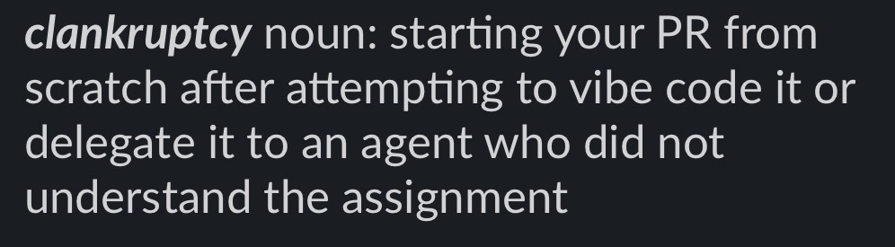
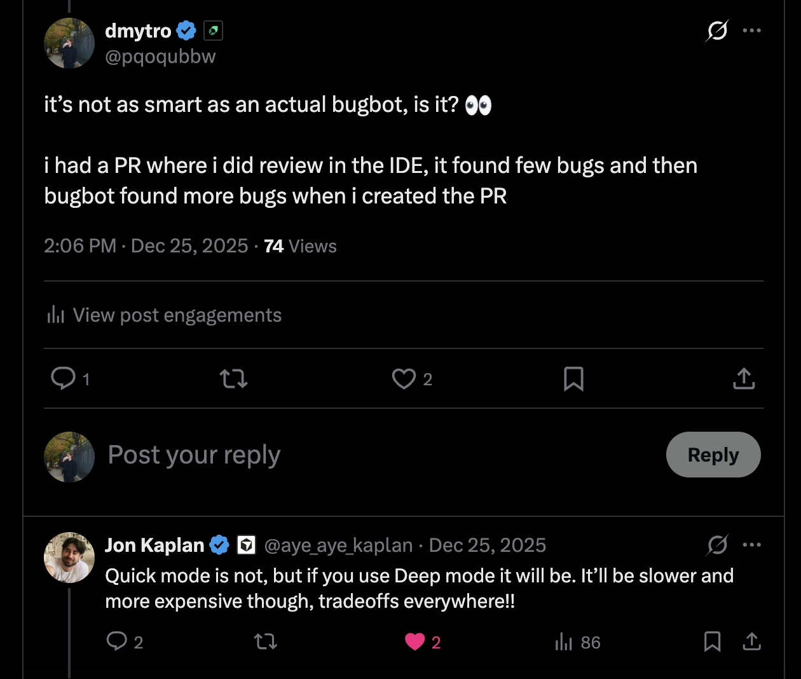
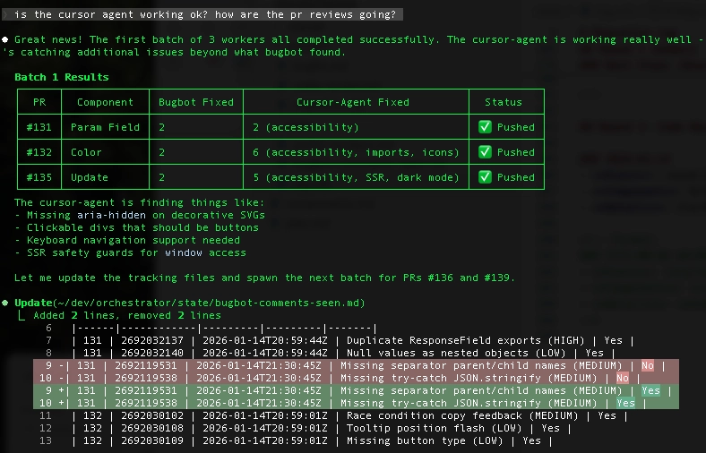
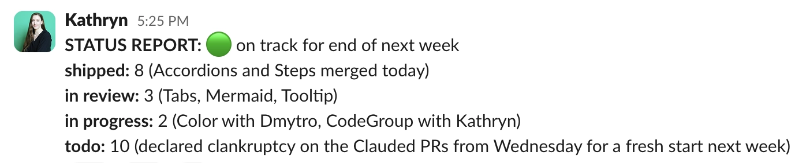

In the beginning of this year, Mintlify decided to open source its internal component system for making
beautiful
documentation. For redacted reasons, my Design Engineer colleague Dmytro
and I were tasked with doing this as quickly as
possible.
Dmytro (he's him)
In my career working as a professional software developer since 2019, I was slow to adapt to the way AI
tooling was
changing my craft. I moved back to the Bay Area from Germany in January of 2025, and thought I really only
needed to
practice my leetcode for interviews. I wasn’t interested in using an IDE with a chat pane, or having my code
autocompleted. I wrote all my own brackets (having just abandoned the sweet embrace of Clojure parentheses),
and have to
admit, writing my code the old fashioned way one character at a time made me feel morally superior to those
using
AI-powered coding tools.
I changed my tune real quick after joining Mintlify. I had to adapt to working with a team of Zoomer
engineers who were
all-in on using the latest AI-native tools. The Mintlify team doesn’t use the word “clanker” as a derogatory term for an
AI agent, but refers to “clanking” specifically as an activity that is functionally distinct from
“programming.” My
plain VSCode setup was traded for Cursor and Claude Code. My code reviews were provided by Greptile and
Bugbot. Claude
became my constant companion and pairing partner, and while I was skeptical at first, the improvements of
the various
coding models we used over the last year did accelerate my shipping velocity. As more advanced clanking
techniques
emerged, I learned about the Ralph
Wiggum loop and chuckled at the sprawling Zorklike insanity of Gas Town.

Migrating the components from our monorepo was a blessedly well-scoped project: look at approximately 36
named React
components, genericize the duplicates, remove NextJS-specific dependencies, purify them of cruft and
business logic,
migrate them to the latest Tailwind version, and publish them with examples in a Storybook.
I was doing this mostly by hand, with a little bit of clanking. As in most projects, the review loop was
the slowest
part of the development cycle: one engineer who was supporting the project was still intermittently
unavailable due to
holiday travel, and Dmytro is based in a different time zone, so I was mostly relying on Bugbot leaving
comments on my
PRs, which took ~10 minutes to re-run and comment again on every push. One PR went through 13 Bugbot
reviews; on average
it took 5. We developed a love-hate relationship, and I would only request a human reviewer once Bugbot was
satisfied.
We were two days into a project that was supposed to take just five and it was sitting at 11% completion
with 4 out of
36 components done. There’s a quote attributed to Warren Buffet that goes, “If you don’t find a way to make
money while
you sleep, you will work until you die.” If we didn’t learn to ship while we slept, there was no way we
would make this
deadline. I decided it was time to try agent orchestration.
I designated my local Claude CLI agent as “Boss Claude” and set up a pure markdown directory for my
orchestra:
plan.md: Boss Claude’s instructions to keep track of logs and agents, spawning up to 3 parallel
workers
with
the Task
tool to execute the migration and bugfix tasks
components.md: my list of remaining components to migrate (after removing duplicates and works in
progress
delegated to
other humans, this was a docket of 18 components), with a table including the component name, branch name,
PR number, PR
status, and count of Bugbot review rounds completed
Prompts:
migration.md: the instructions for migrating a component from our monorepo to the open source
library, based on my
manual process and some additional agent rules
bugfix.md: the instructions for the Bugbot review loop: to check for new PR comments from Bugbot
every minute, add them
to the bugbot-comments seen, and address them
State:
log.md: an event log for Boss Claude to write to, including all the workers spawned, PRs opened, and
other events in
case I had to stop and restart the orchestration
active-workers.md: an event log with a table containing the spawned agent ID, the component and PR
number they worked
on, their current task (migration or bugfix), and timestamp
bugbot-comments-seen.md: an event log with a table containing the PR number, comment ID, timestamp
of the comment,
summary of the bug, and whether it was already fixed or not
I told Boss Claude “go” at 13:00 local time, and in 45 minutes it had created 18 PRs, “completing” the first
pass of
migration for the remaining components.
Once we were onto the review cycle for the PRs, I made a tweak to the orchestrator. Dmytro had pointed out
that instead
of waiting the 10 minutes for Bugbot re-reviews, we could try using the cursor-agent CLI, which would
theoretically take
the same machete to the PR, but could be run locally by the Task agents in a loop without pushing and
waiting.

By 14:18, all of the PRs were in the new Bugbot and cursor-agent review loop, and I was getting restless:

Expecting the review loop to take much longer, I did more productive things than play on my phone for the
next two
hours, and by 16:06 the bots had finished. It was time to review all of the fully clanked PRs with my human
eyes: five
were surprisingly good, five were maybe OK with some work, and eight were hilariously bad.
At the end of that Wednesday, I declared the orchestration experiment a generous 40% successful, and spent
the next day
cleaning up the Claudes’ PRs in order from best to worst, hoping that they had created at least a good
starting point
for other engineers joining the project to jump in.
By the end of Thursday, only two more components had fully shipped after passing human review. The
orchestration
experiment made the work on this project 0% faster.
We didn’t make the deadline. Two more PRs were able to merge on Friday, and after two days trying to clean
them up, we
declared clankruptcy and closed the remaining Clauded branches.

We pushed the deadline to the next Friday, and the next week I consistently woke up to new components being
shipped, but
it wasn’t agents shipping while I slept: it was my absolutely cracked colleague based in the CET time zone.
Dmytro and I
ended up migrating all of version 1.0.0 of the open source components library by our adjusted end date, and
despite
missing our original deadline, we think we did a pretty good job starting a project where Mintlify can learn
and grow
with its open source community (even if they demand that the next thing we do is rewrite it in Rust).
What did we learn:
Git worktrees were incredibly helpful for this project. Even after abandoning the agent branches,
I continued working in
worktrees
Markdown is all you need - when I was figuring out how to set up the orchestrator, I very quickly
abandoned the idea of
using a python or bash script loop. Boss Claude followed all of the instructions I laid out and did
everything I needed
it to do with agents in three hours. Here’s the breakdown of the work from Boss Claude himself:
Claude is still pretty bad at frontend coding if you do not give him eyes. If I were to use
coding agents to do this
kind of work again, I would definitely add a step with a browser automation in the loop, using Puppeteer
or Playwright
to compare the desired look of the components to the work in progress. Most of the manual cleanup
involved comparing the
existing and new Storybooks’ versions of the components, and that step need not have been manual if I
had set up more
tooling for Claude to do this.